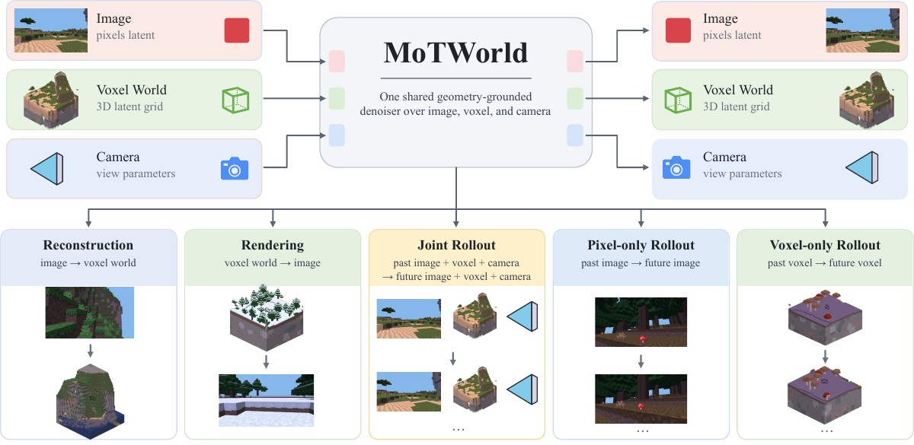
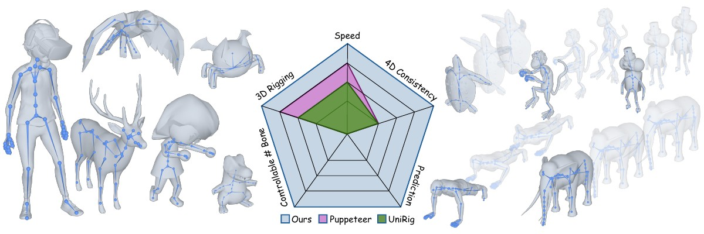
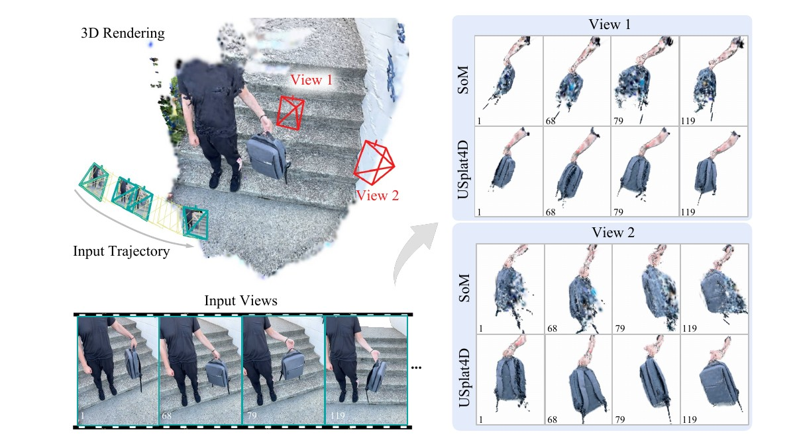
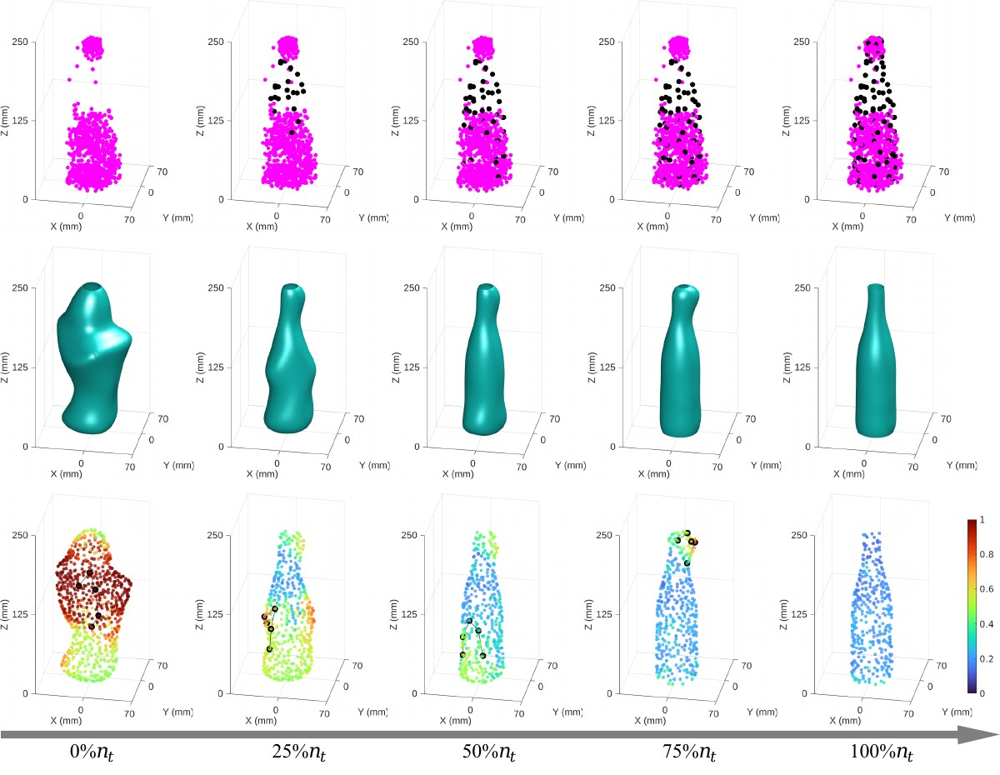
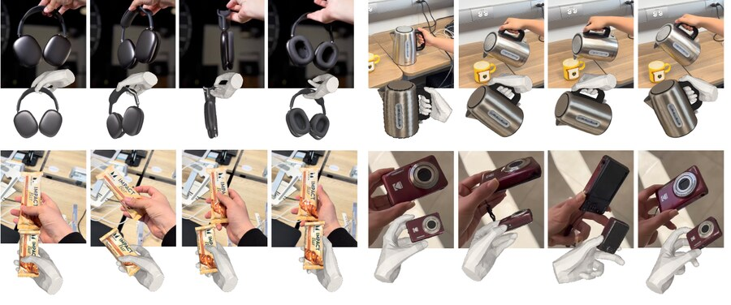
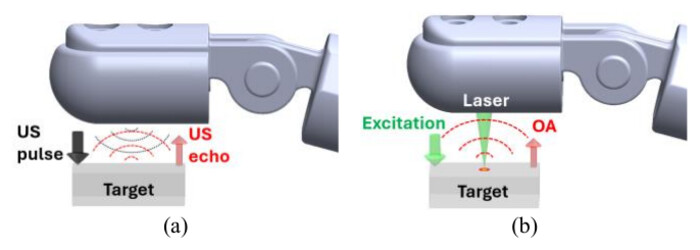
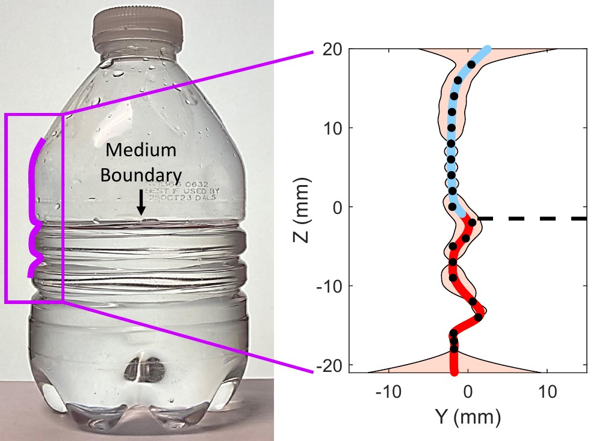
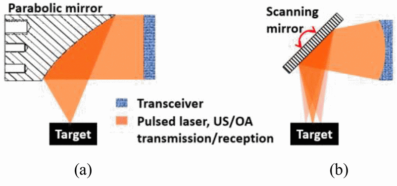
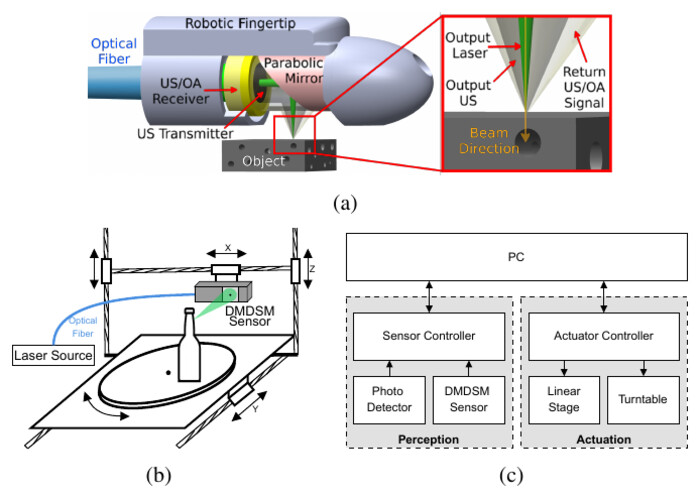

I am a Ph.D. candidate in Computer Engineering at Texas A&M University, where I am advised by Dr. Cheng Zhang in the TAMU Visual AI Lab and Dr. Dezhen Song in the NetBot Lab. In summer 2025, I was a research intern at Mercedes-Benz R&D North America in San Jose, working with Dr. Sihao Ding on feedforward Gaussian Splatting for driving scenes, and I have since continued collaborating with the team on video generation for autonomous driving.
Before my Ph.D., I received my M.S. and B.S. in Electrical Engineering from Tianjin University, where I worked with Dr. Xingfei Li on SLAM. I also spent time as a research assistant at the University of Michigan's WIMS2 Center with Dr. Yogesh Gianchandani and Dr. Tao Li.
My research focuses on computer vision, including dynamic world understanding, reconstruction, and prediction. Specifically, I aim to build visual intelligence through spatio-temporal generation. My recent work includes uncertainty-aware dynamic Gaussian Splatting for 4D reconstruction and 3D tracking, feedforward scene reconstruction, 4D skeleton generation from meshes or videos via flow matching, and geometry-grounded world models.

A MoT world model with joint video and occupancy branches for long-horizon consistency, using SpatialRoPE, an SE(3)-invariant positional encoding, for geometry-aware attention across modalities.

A unified flow-matching framework for skeleton generation on 3D and 4D meshes, with uncertainty and graph heads that predict per-bone quality and connectivity, plus feedforward skinning-weight prediction.

Closed-form uncertainty estimates for dynamic Gaussians build uncertainty-aware spatio-temporal graphs, giving more stable geometry under severe occlusion and high-quality synthesis at extreme viewpoints.

Fuses a camera with the PDM2 pretouch sensor through distributed Gaussian-process shape reconstruction and information-gain-driven active scan planning, raising the average IoU on transparent household objects from 0.73 to 0.96.

A feed-forward conditional flow-matching model that refines foundation-model hand-object estimates into accurate 4D interactions, with test-time guidance from physical constraints and 2D evidence.

A fiber-tip optical ultrasound receiver makes the pretouch sensor smaller and immune to electromagnetic interference while keeping its ranging and material/structure sensing performance.

A pretouch perception algorithm that uses a fingertip DMDSM sensor to map object material and structure before contact, to assist grasping and manipulation.

The third-generation fingertip pretouch sensor, combining pulse-echo ultrasound and optoacoustic sensing for near-distance ranging and material sensing in robotic grasping.

An automatic object scanning system, built by refitting a 3D printer with a motorized turntable, plus a calibration method for the fingertip DMDSM sensor and scanner.